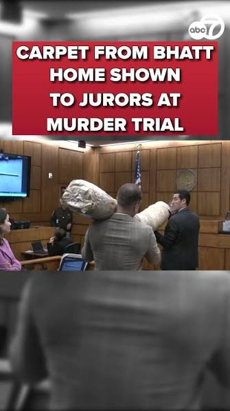

USA · Courts
Naresh Bhatt convicted of murdering his wife, Mamta Kafle Bhatt, after jury rejects suicide claim
He told the court he cut her body up with a power saw and put the remains out with the rubbish — then insisted she had died by suicide. A Prince William County jury took about four hours to disagree. Her body has never been found.
Reviewed by a Virginia-barred attorney

The case at a glance
- Verdict
- Guilty on all three counts — first-degree murder, concealing a dead body, defiling a dead body
- Deliberation
- About four hours, after more than 17 days of testimony
- Defendant
- Naresh Bhatt, 39, Manassas Park
- Victim
- Mamta Kafle Bhatt, 28, pediatric nurse and mother
- Remains
- Never recovered, including after a landfill search
- Sentencing
- 1 p.m., 12 March 2027, Prince William County Circuit Court
MANASSAS, Va. — A Prince William County jury convicted Naresh Bhatt of first-degree murder on Tuesday, rejecting his account that his wife had taken her own life and that he had dismembered her body in a panic afterwards.
The panel deliberated for roughly four hours after a trial that ran past its seventeenth day of testimony. Jurors also found Bhatt guilty of concealing a dead body and of physically defiling a dead body. He was remanded immediately after his bond was revoked.
Mamta Kafle Bhatt, 28, was a pediatric nurse and the mother of the couple's daughter, Neema. She disappeared from the family's Manassas Park home in late July 2024 and was reported missing in early August. Her remains have never been recovered.
What Bhatt was convicted of
A Prince William County jury found Naresh Bhatt guilty of first-degree murder, concealing a dead body and defiling a dead body on 10 November 2026. Deliberation lasted about four hours after more than 17 days of testimony. His bond was revoked and he was remanded. Sentencing is 12 March 2027.
First-degree murder is a Class 2 felony under Virginia Code § 18.2-32. It carries a fixed 20 years to life; a judge cannot go below twenty. The two lesser counts are Class 6 felonies carrying up to five years each.
Whether those shorter terms run alongside the murder term or are added end to end is the decision that will actually set his release date. Our analysis of the sentencing arithmetic sets out the three configurations available to the judge.
The concession at the centre of the case
Bhatt testified in his own defence that his wife died by suicide at home and that he dismembered her afterwards. He did not call an ambulance, a doctor or her family before starting. Under that account the disposal was a reaction to a death, not a concealment of a killing.
The central fact of the trial was never contested. Taking the stand, Bhatt conceded that he had used a power saw to cut up his wife's body and that he had placed the remains in the household rubbish.

What he disputed was why. Prosecutors spent their case building the alternative: that the death was a killing and the disposal a cover-up. Jurors were shown blood evidence recovered from the home and evidence of a cleanup, alongside the abrupt end to her phone and message activity.
Defence counsel's line outside court, on the concession strategy or on appeal.
Why the jury took four hours
Four hours is fast for a three-week trial with a live defence. One juror, asked afterwards what produced the verdict, described it in terms of credibility rather than forensics.
So many lies were told.
Outside court, supporters of the victim's family gathered.
We stand here today with tear-stained eyes.
How a murder case was built without a body
Yes — a murder conviction does not require a corpse. Virginia requires corroboration of a confession, and the rule, corpus delicti, demands evidence that a crime occurred. Prosecutors cleared it with blood and cleanup evidence, the physical signature of a dismemberment, the abrupt end to her phone traffic and a documented waste route.
The rule is corpus delicti — "the body of the crime." Not the body itself: the proposition that a crime happened. It exists so a conviction cannot rest on a confession alone.
Virginia's bar is low in practice and was cleared here repeatedly. It explains the shape of the investigation. With no remains and no admission to the killing, four categories carried the case: blood and cleanup evidence, the physical signature dismemberment leaves in a room, the sudden stop of her phone and message traffic, and the waste route.
Every one of those proves that she died, and roughly when. Only a body proves how. Recovered remains would have settled cause of death and with it the distance between murder and the suicide account. How no-body murder convictions work in Virginia sets out the doctrine in full.
The landfill search, and why it failed
Investigators traced the household's refuse to a collection round and a landfill cell, then excavated. Compaction of bagged waste makes recovery long-odds. The dig produced no remains, but it put the disposal sequence in front of the jury as a documented chain rather than an assertion.
Refuse in the region goes to a regional landfill and is compacted into discrete daily cells. Establish which collection round took which bin and which cell it was tipped into, and in principle a specific load can be dug for.
It failed for physical reasons: a bagged body going out with household waste is a small object in an enormous volume, and the compaction is brutal. The full sequence is in our dated log of the recovery attempts.
A family in Nepal, and a two-year-old
Mamta Kafle Bhatt's family are in Nepal. She entered the US as a nurse and the household's immigration standing ran through her employment; Bhatt's authorisation was derivative. There was no parent nearby to raise an alarm. Colleagues on the ward noticed first when she missed a shift.
That structure is common in diaspora households and it changes what a disappearance looks like. No sibling could drive over. Her mother, Gita Kafle, and brother, Mahesh, arrived from Nepal in October 2024; her daughter Neema has been in their care since.
Nothing about the verdict settles the child's position. Custody, her mother's estate and the survivor benefit are all separate proceedings. What happens to Neema covers them.
Get one email on 12 March
We will send the sentence, the judge's reasoning and what it means for release — nothing else.
One email. No list rental. Unsubscribe in one click.
Done — we will email you on 12 March.
What happens on 12 March
Sentencing is 1 p.m. on 12 March 2027 in Prince William County Circuit Court. First-degree murder carries 20 years to life. Concealing and defiling a dead body carry up to five years each. Whether the shorter terms run concurrently or consecutively sets his release date.
Virginia abolished discretionary parole in 1995. A life sentence in the state means life, apart from discretionary geriatric release at 60 or 65. That makes the consecutive question, not the murder range, the one that decides whether he ever has a release date.
Also unresolved: the remains, the death certificate and the estate. Virginia can issue a certificate on a judicial finding, but without a body the process is slower and easier to contest — and the certificate is the document that opens the estate.
Read next The arithmetic of 12 March: what the conviction actually carries — and why a missing body is still a legal problem
Questions people are asking
Was Naresh Bhatt found guilty?
Yes. A Prince William County jury convicted him on all three counts — first-degree murder, concealing a dead body and defiling a dead body — on 10 November 2026, after about four hours of deliberation.
Has Mamta Kafle Bhatt's body been found?
No. Her remains have never been recovered, including after a search of a regional landfill. The conviction did not depend on recovering them.
When is Naresh Bhatt sentenced?
1 p.m. on 12 March 2027 at Prince William County Circuit Court. He faces 20 years to life on the murder count.
Can you be convicted of murder without a body in Virginia?
Yes. Virginia requires corroboration of a confession, not a corpse. Independent evidence tending to show a crime occurred is enough.
Where is Bhatt now?
He was remanded after his bond was revoked at the verdict and is in custody pending sentencing.
Sources Prince William County Circuit Court record and docket · Virginia Code §§ 18.2-32, 18.2-323.1, 18.2-323.2, 53.1-40.01 · Virginia Department of Corrections release policy · reporting by WTOP, WUSA9, WJLA, NBC Washington and InsideNoVa.
Corrections Report an error to corrections@pulseamericanews.com with the URL and the claim.

Krishna Basnet
Founder. Reported from Prince William County Circuit Court for this piece.
All stories